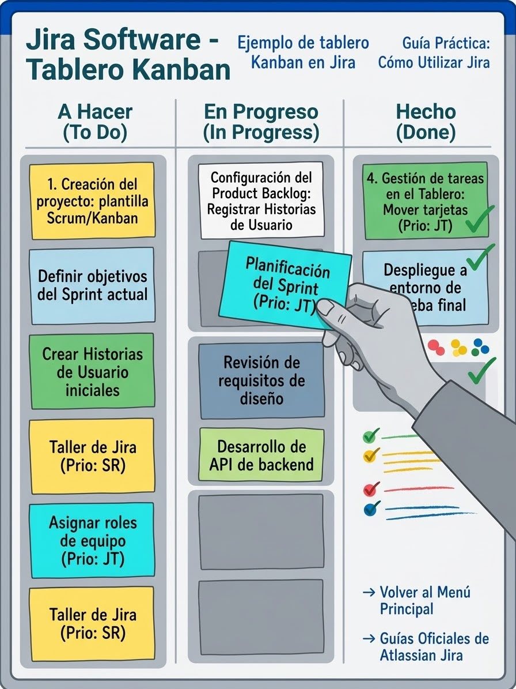

Guía Práctica: Cómo Utilizar Jira en Proyectos de Software SENA
← Volver al Menú Principal
Jira es una de las plataformas líderes en gestión de proyectos bajo metodologías ágiles (Scrum y Kanban). Como aprendiz SENA, aprender a administrar tus tareas mediante esta herramienta optimizará de manera importante tu desempeño durante las fases del proyecto formativo.
1. Pasos Básicos para Iniciar en Jira
Sigue la siguiente secuencia ordenada para organizar tus historias de usuario e incidencias:
- Creación del proyecto: Selecciona una plantilla Scrum o Kanban según la metodología definida con tu instructor.
- Configuración del Product Backlog: Registra las historias de usuario definiendo los requisitos del sistema.
- Planificación del Sprint: Selecciona los ítems prioritarios del backlog y asígnalos al sprint activo.
- Gestión de tareas en el Tablero: Mueve las tarjetas a través de los estados: Por hacer (To Do), En progreso (In Progress) y Finalizado (Done).
2. Visualización del Tablero de Trabajo

Ilustración del flujo visual dentro del tablero de control de un proyecto.
3. Recursos Adicionales y Documentación Oficial
Para profundizar en el uso de Jira, consulta el siguiente recurso oficial:
Guías Oficiales de Atlassian Jira